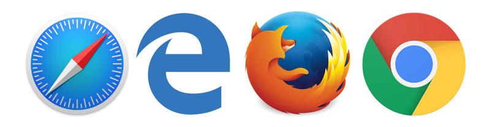

5.1.- Herramientas de los navegadores web.
Actualmente, las últimas versiones de los navegadores web más populares: Mozilla Firefox, Google Chrome, Safari y Microsoft Edge, contienen herramientas para los desarrolladores web. A través de dichas herramientas podemos trabajar con nuestros desarrollos web de forma dinámica, permitiéndonos habilitar y deshabilitar distintos lenguajes utilizados, como JavaScript y CSS, modificar la hoja de estilos en tiempo real e incluso modificar líneas de código HTML de forma dinámica, para ver como quedaría nuestra web con dichas modificaciones y con la ventaja de que los cambios serán deshechos al recargar la página.
Veremos las herramientas de ayuda a los desarrolladores web que contienen los navegadores web: Safari, Microsoft Edge, Mozilla Firefox y Google Chrome.
